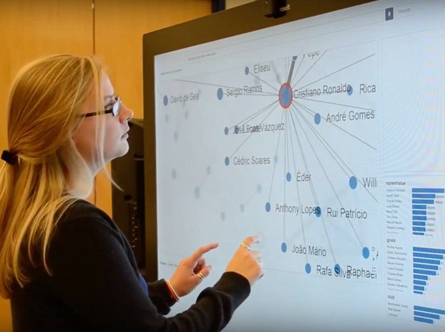

Arjun Srinivasan and John Stasko
Data visualization systems have predominantly been developed for WIMP-based direct manipulation interfaces. Only recently have other forms of interaction begun to appear, such as natural language or touch-based interaction, though usually operating only independently. Prior evaluations of natural language interfaces for visualization have indicated potential value in combining direct manipulation and natural language as complementary interaction techniques. We hypothesize that truly multimodal interfaces for visualization, those providing users with freedom of expression via both natural language and touch-based direct manipulation input, may provide an effective and engaging user experience. Unfortunately, however, little work has been done in exploring such multimodal visualization interfaces. To address this gap, we have created an architecture and a prototype visualization system called Orko that facilitates both natural language and direct manipulation input. Specifically, Orko focuses on the domain of network visualization, one that has largely relied on WIMP-based interfaces and direct manipulation interaction, and has little or no prior research exploring natural language interaction. We report results from an initial evaluation study of Orko, and use our observations to discuss opportunities and challenges for future work in multimodal network visualization interfaces.